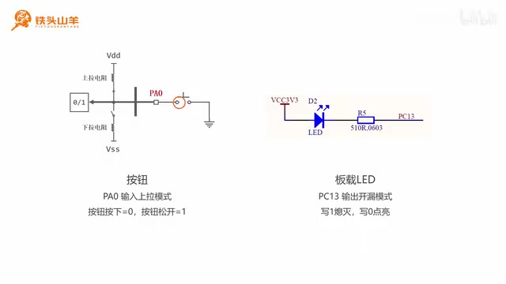
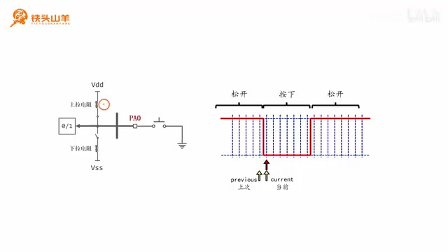
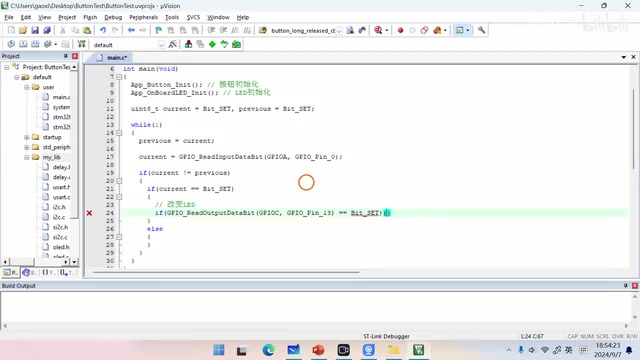
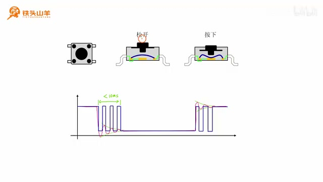
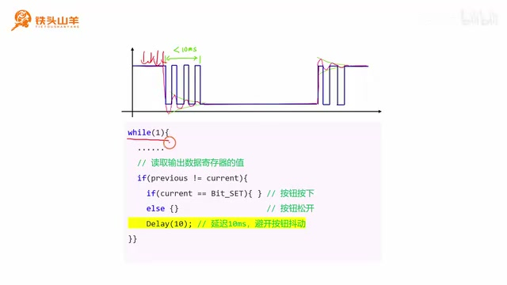
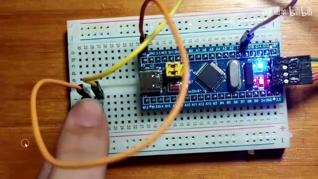

P026 · 5.2 （番外） 按钮驱动程序编写¶
各位同学大家好，我是铁头山羊。从今天开始讲一个番外篇。上一期介绍了 SPI 总线的电路结构和通信协议；后续学习 SPI 时会做实验，实验里要用到按钮，所以这一节（第 5.2 节）一起学习按钮驱动程序的编写。本套视频需要的材料都在开发套件包里，屏幕上有二维码，可以进入淘宝店铺购买；购买后可以获得课程课件和源码，也能加入答疑群和 UP 主直接交流。
本期要做的事是用一枚按钮切换板载 LED 的亮灭：每按一次，LED 状态就切换一次。内容比较简单，所以只分四部分来讲：先看电路怎么接；再初始化板载 LED 和按钮所用的 IO 引脚；第三部分讲按钮程序的基本编写原理；最后给按钮消抖。下面从第一部分，也就是本次实验的接线开始。
按钮与板载 LED 的接法¶
本次电路里只有两个主要电子元器件：按钮和上面的板载 LED。板载 LED 固定连接在单片机 PC13 引脚；按钮的 IO 引脚可以自己选，比如这里把按钮接到 PA0。按钮与 LED 的连接方式之前的视频已经详细介绍过，这里再复习一遍。
先看按钮：在单片机上找一个 IO 引脚，例如 PA0；按钮一端接 PA0，另一端接地。再把这个 IO 引脚设置为输入上拉模式，也就是使能图里的上拉电阻。按钮松开时，PA0 悬空，在上拉电阻作用下电压被拉高到 3.3 V，因此读到的值是 1。把按钮按下后，两个点导通，PA0 通过按钮直接接地，电压变成 0 V，输入数据寄存器读到 0。所以按下读 0、松开读 1；看输入数据寄存器的值是零还是一，就能判断按钮是按下还是松开。
再来看板载 LED。它使用标准的开路接法：阳极接高电压 3.3 V，阴极通过限流电阻接到单片机 PC13，因此 PC13 应设为输出开漏模式。向 PC13 写 0 时，这个引脚输出低电压，LED 阴极被拉低，电流从上面流过 LED，LED 点亮；写 1 时这个点相当于断开，LED 熄灭。因此这里的逻辑是 PC13 写 1 灭、写 0 亮。
本次实验的接线示意图很简单。板载 LED 已经焊在最小系统板上，所以这部分不用额外接线；图中给出了左侧按钮的接法：一端接地，另一端接单片机 PA0，也展示了板载 LED 与 PC13 的连接。照着示意图把电路连好，接下来开始编写代码。

PA0 上拉输入按钮按下时接地的电路，以及 PC13 板载 LED 的连接示意。 · 原片 02:25
初始化按钮与板载 LED¶
电路连接好后，第二步是初始化板载 LED 和按钮的 IO 引脚。先登录百度网盘并新建工程，把模板工程下载下来；下载完成后将压缩包解压到当前文件夹，文件夹命名为 button_test，里面的工程文件也重命名为 button_test，再打开工程。双击打开 main.c，程序就写在这个文件里。要做的初始化很简单：PA0 设成输入上拉，PC13 设成输出开漏。
为了让代码工整，按钮初始化和 LED 初始化各封装成一个函数。按钮函数叫 App_MyButton_Init；前面用过 My_ 前缀，这里改用 App_，是为了防止与 MyLib 里的函数重名。另一个函数是 App_OnboardLED_Init，用来初始化板载 LED。先把这两个函数的声明写好，再复制到下面实现。
先实现按钮初始化。只要把 PA0 设为输入上拉模式即可。首先使能 GPIOA 的时钟；然后声明 GPIO 结构体类型的变量，并逐一给成员赋值：使用的引脚是 GPIO_Pin_0，模式指定为 GPIO_Mode_IPU，也就是输入上拉。因为是输入模式，不需要指定最大输出速度。最后调用 GPIO_Init，完成 PA0 的初始化。
再实现板载 LED 初始化。LED 使用 PC13，所以要使能 GPIOC 时钟；上面的使能时钟代码可以复制一份，把 GPIOA 改成 GPIOC。接着同样声明结构体并设置成员：引脚改成 GPIO_Pin_13，表示 PC13；模式设为输出开漏 GPIO_Mode_Out_OD。然后设置最大输出速度，选择最低的 2 MHz，最后调用 GPIO_Init，并把引脚对应的端口改成 GPIOC。这样两个初始化函数就都写好了。在 main 方法一开始调用按钮初始化和板载 LED 初始化，并分别加上注释。
通过状态变化识别松开瞬间¶
初始化完按钮和板载 LED 后，先回头看一下实验现象：每次按下按钮，LED 亮灭状态会切换，但仔细观察会发现，按钮按下时 LED 状态不变，只有松开按钮的瞬间状态才切换。也就是说，按下时不变，松开时切换；再按下不变，再松开切换。现在的问题就是如何捕捉按钮松开的瞬间。
回到电路图，因为 PA0 设置为输入上拉，按钮按下时 PA0 接地，读到 0；按钮松开时 IO 悬空并被上拉，读到 1。所以松开与按下对应两种不同的读数，持续读取 PA0 就能观察这些变化。
用两个变量，一个叫 previous，记录上一次读到的引脚值；另一个叫 current，记录当前值。比如当前读到 0、上一次读到 1，两值不相等，就说明按钮状态发生变化。再进一步判断是哪种变化：如果上一次读到 1，表示之前松开；当前读到 0，表示现在按下，这是按下的变化瞬间。反过来，如果之前读到 0，表示之前按下；现在读到 1，表示现在松开，这就是松开的瞬间。这样就能捕捉按钮松开。
照着图的思路编写代码。先声明 previous 保存按钮上一次状态，再声明 current 保存当前状态，两个变量都给初值 Bit_SET。Bit_SET 表示 1，也就是假设初始状态下按钮松开。然后写 while 循环，不断读取 IO 引脚值，用 GPIO_ReadInputDataBit 读取 PA0 并存进 current。读取前先将上一轮读到的值保存到 previous。这两步更新了当前值和上次值；接着判断是否相等。不相等表示按钮状态变化，再判断方向：当前是高电平，说明低到高、按钮松开；否则就是高到低、按钮按下。本次实验只在按钮松开时切换 LED，所以把改变亮灭状态的代码放在这个分支里。接下来按图逐行写出这段代码：先声明变量，再在循环里更新并判断。

按钮松开、按下、再松开时，PA0 输入电平呈现的边沿变化。 · 原片 08:40
变量类型都是无符号 8 位整型。给 current 和 previous 的初值是 Bit_SET，也就是高电平，表示假设按钮最初是松开的。while 循环不断运行，每轮先把 current 赋给 previous，也就是保存按钮上一次状态；随后调用 GPIO_ReadInputDataBit 读取 PA0 的值并更新 current。更新后比较二者：不相等才说明出现了状态变化，再根据当前电压进一步判断是按钮松开还是按下。当前为高电平表示按钮松开；否则表示按钮按下。本实验在按钮松开时改变 LED 亮灭，所以操作写在这个条件分支中。
代码就是按这个顺序写：声明 previous 和 current 并设初值，进入 while 后先更新上次读数，再读入当前值，接着判断两值是否不同；只有状态变化才进入内部判断。内层判断当前值是否为 Bit_SET，满足时是按钮松开，另一种情况就是按钮按下。把思路落到代码上时，先定义两个变量，一个保存上次的值，一个保存当前值，再通过两次读数的不同捕捉状态变化。因为本次要在按钮松开时切换 LED，实际操作只放在松开的判断里。
读取 LED 原来的输出状态并翻转¶
接下来解释如何切换 LED 亮灭。先回顾 PC13 输出模式的内部电路：IO 引脚内部有 P-MOS 和 N-MOS 两个 MOS 管，通过控制它们的通断，向引脚输出不同电压。CPU 向输出数据寄存器写 0 或 1，再经过输出控制电路控制 MOS 管。之前学过 GPIO_WriteBit，它的作用就是向输出数据寄存器写零或写一。今天再学一个新接口 GPIO_ReadOutputDataBit：从名字看，Read 是读，Output 是输出，Data 是数据，Bit 是比特位；作用就是读取输出数据寄存器对应位到底是零还是一。
因此，在按钮松开的分支中先调用 GPIO_ReadOutputDataBit，读取上次向 PC13 写入的是零还是一。如果上次写入 1，本次就写 0，也就是 Bit_RESET；如果上次写入 0，本次写 1，也就是 Bit_SET。每次读取后写入相反值，输出就在 0、1 之间翻转，从而切换 LED 亮灭。到这里代码编写完成。
编写按钮状态判断¶
到这里先写变量初值：Bit_SET 表示初始状态下 PA0 为高电平，也就是按钮松开。程序已经有一个 while 循环，所以把代码写在现有循环里面，不需要再新建循环。每轮先保存上次状态，把 current 赋给 previous；再调用 GPIO_ReadInputDataBit 读取 GPIOA 的 PA0，更新当前值。两者更新后判断是否相等；不相等说明按钮状态变化，继续判断是按下瞬间还是松开瞬间。当前电压为高电平说明按钮松开，否则是按钮按下。因为要在按钮松开时调整 LED 亮灭，改变 LED 的代码放进这个条件分支。
换句话说，每轮开始要先保存上一次循环读到的值，再取新的输入值，这样 previous 和 current 才分别代表上次和当前状态。读完以后，如果二者相等，按钮状态没有变化；不相等时才往下判断。当前值为高，对应从低到高的变化，也就是松开；当前不是高则对应按下。这个判断框架写完后，按钮状态检测部分就完成了。
读取 LED 输出位并翻转¶
接下来考虑怎样切换 LED 状态。先回顾 PC13 输出模式的内部电路：IO 引脚有 P-MOS 和 N-MOS 两个 MOS 管，通过控制它们通断向引脚输出不同电压。CPU 向输出数据寄存器写 0 或写 1，再通过输出控制电路控制 MOS 管。之前学过 GPIO_WriteBit，作用是向输出数据寄存器写 0 或 1。现在再学一个接口 GPIO_ReadOutputDataBit：Read 是读，Output 是输出，Data 是数据，Bit 是比特位；它读取输出数据寄存器中对应位的值，判断此前写入的是 0 还是 1。
代码先用 GPIO_ReadOutputDataBit 读取 PC13 上次写入的值。如果上一次写入 1，这一次就写 0；如果上一次写入 0，这一次写 1。读出上一次写入的是 0 还是 1 后，写入相反值，输出便在 0 和 1 之间翻转，LED 的亮灭状态也就切换。
因此可以按伪代码理解：读出上次输出；如果上次为一就写零，否则就写一。按钮松开时执行这个分支，LED 状态就从当前状态变为相反状态。

通过读取 PC13 输出数据位，并写入相反值来翻转 LED。 · 原片 15:35
编译、下载并检查初版效果¶
继续完成翻转代码：先读取 PC13 上次写入的值；如果是 1，这次写 Bit_RESET（0）；否则上次写的就是 0，这次写 Bit_SET（1）。到这里按钮和 LED 状态切换的代码就写完了。按左上角第二个按钮编译，先出现一个 warning。查看 warning，是最后一行没有加换行；补上换行后再编译，没有错误，也没有警告。把代码下载到单片机检查效果：先按单片机的复位按钮，再按左边的按钮；每按一下 LED 亮灭状态就切换一次。
编译时出现的 warning 指向文件最后一行。补好换行后再次编译，确认没有报错、也没有警告，再将程序下载到单片机。程序运行后，先按复位按钮，再操作面包板左侧的按钮，观察板载 LED；正常情况下按一次就切换一次。不过实际操作中可能会遇到按钮好像没有响应的情况，这就是接下来要解释的抖动问题。
不过有时会发现按钮好像突然失灵。原因是按钮会抖动。下面进入第四部分，看看怎么用软件消抖。先看左上角图中的实验按钮，把它拆开：左右各有一个引脚，上面是按钮帽，下面是按钮体，内部弧形的金属结构叫锅仔片。按钮松开时，锅仔片翘起，两个电极之间没有导通，两只引脚断开；按钮帽按下后挤压锅仔片，使它变成压下的形状，两个点通过锅仔片导通，因此两只引脚接通。
锅仔片是金属片，也有弹性。按下或松开按钮的瞬间，它不能立刻稳定下来，会出现图中那样的波形。按下时会抖，松开时也会抖，单片机读到的是 0、1 交替变化的毛刺，因此 LED 可能工作不稳定。
也就是说，按钮机械接点看似只导通一次，但弹片在稳定前会短暂反复接通、断开；输入脚因此出现多次高低电平跳变，而程序会把这些跳变当成真实状态变化。

按钮金属弹片在按下或松开后会短暂弹动，输入因此出现抖动。 · 原片 17:40
毛刺如何造成看似失灵¶
来看按钮为什么会失灵。我们的代码捕捉的是上升沿，也就是按钮松开的瞬间，并在这个时候切换 LED 亮灭。图中用 0 表示 LED 熄灭、1 表示 LED 点亮，每遇到一个上升沿，LED 状态就变化一次。假设图里有偶数个毛刺，也就是偶数个上升沿：LED 先从 0 变成 1，再从 1 变回 0；之后又从 0 变成 1，最后再从 1 变回 0。这样状态变化了偶数次，最后相当于没有变化。因为整个过程非常快，人眼看到的现象就是按下按钮之后 LED 亮灭状态没有改变，这就是看起来失灵的原因。
用 10 ms 延迟消抖¶
知道按钮失灵原因后，怎样避免？可以利用按钮抖动的持续时间来处理。图中标出的抖动最长不会超过 10 ms，一般在 1 ms 左右。首次检测到按钮状态变化后，做一个 10 ms 延迟；延迟结束时按钮上的电压已经稳定，相当于把中间的毛刺去掉，之后稳定地只触发一次。这个办法就能消抖。
图里的时间标记说明整个抖动过程短于 10 ms；因此延时选 10 ms，就能等这段不稳定时间过去再继续，而不是在毛刺期间把每个电平跳变都当成一次新的按钮动作。
代码里 while 循环不断查询按钮当前值到底是 0 还是 1。两次读数不同，就说明遇到边沿；在这个 if 里加入 10 ms 延迟，就能避开中间那段波形。找到刚才写的代码，在 main 方法里的循环中找到判断 current 和 previous 不相等的 if，按钮状态发生变化时就在这里加延迟。要调用 Delay，先翻到文件顶部引用 delay.h。
所以延迟是放在检测到状态变化的判断里面：先比较前一次和当前读数，发现不同后再等待，而不是对每次循环都做一次延迟。这里的 delay.h 代码稍作修改后，不需要再调用 Delay_Init，程序会自动帮我们调用这个初始化方法，所以这里只写一个 Delay(10)，也就是延迟 10 ms。修改完成后编译代码，再下载到单片机。先按单片机上的复位按钮，再按实验按钮，观察执行效果。

检测到按钮状态变化后延时 10 ms，以避开抖动产生的快速毛刺。 · 原片 19:55
复位后按一次按钮，LED 亮灭状态切换一次；再按一次，LED 又切换一次，效果非常稳定，这样本次实验就完全成功了。本期内容到此结束。下一期继续介绍与按钮相关的知识，会讲按钮单击、双击、三击或者长按等动作，以及这些动作是如何实现的。

按下实验板上的按钮后，板载 LED 稳定切换亮灭状态。 · 原片 21:10